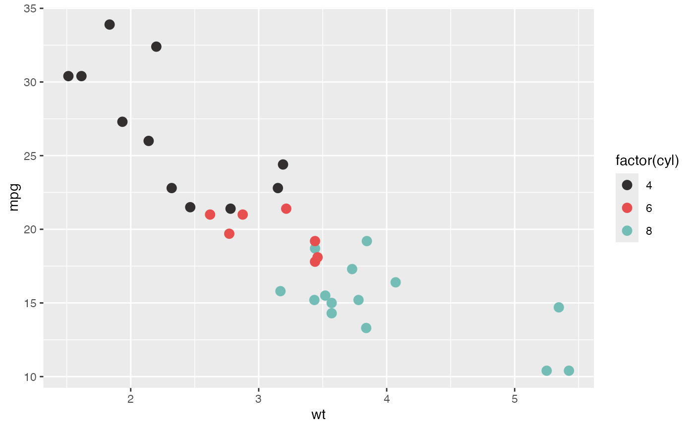
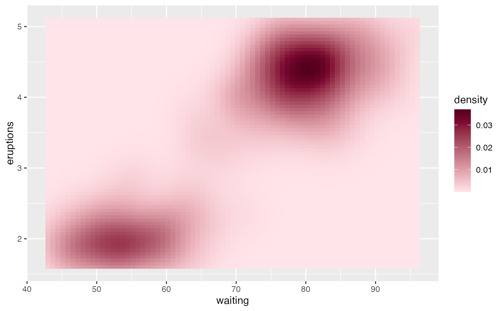
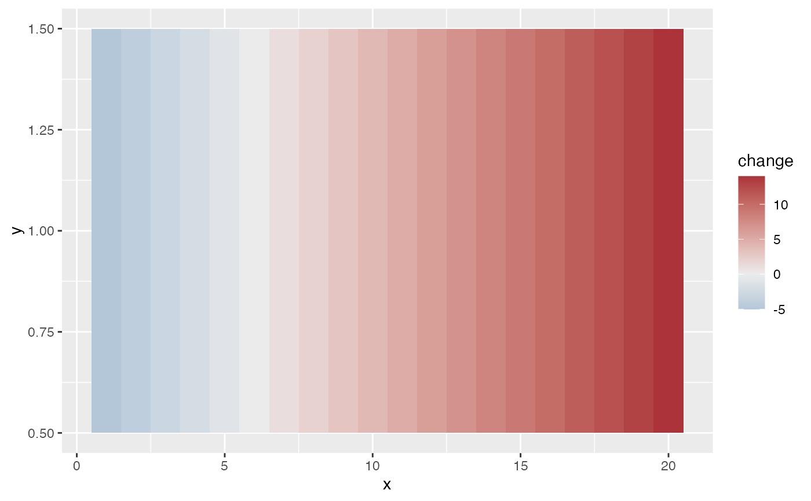

Colour and fill scales using the Lynch palettes. The _d scales are for
categories and use a discrete palette from lynch_palettes; the _c scales
are for numbers and use a ramp from lynch_sequential or lynch_diverging.
Usage
scale_colour_lynch_d(palette = "lost_highway", direction = 1, ...)
scale_fill_lynch_d(palette = "lost_highway", direction = 1, ...)
scale_colour_lynch_c(
palette = "dune",
type = c("sequential", "diverging"),
direction = 1,
midpoint = NULL,
guide = "colourbar",
...
)
scale_fill_lynch_c(
palette = "dune",
type = c("sequential", "diverging"),
direction = 1,
midpoint = NULL,
guide = "colourbar",
...
)
scale_color_lynch_d(palette = "lost_highway", direction = 1, ...)
scale_color_lynch_c(
palette = "dune",
type = c("sequential", "diverging"),
direction = 1,
midpoint = NULL,
guide = "colourbar",
...
)Arguments
- palette
Name of the palette. For the discrete scales, any name in
names(lynch_palettes). All butblue_velvetstay distinct with red-green colour blindness; useblue_velvet_safefor that film. For the continuous scales, a name innames(lynch_sequential)ornames(lynch_diverging), depending ontype.- direction
1for the palette's order,-1to reverse it.- ...
Other arguments passed to
ggplot2::discrete_scale()orggplot2::continuous_scale(), such asname,labelsorna.value.- type
"sequential"for ordered values,"diverging"for values either side of a midpoint.- midpoint
For continuous scales, the data value to put at the centre of the ramp, such as
0for a diverging scale.NULLspans the data range.- guide
For continuous scales, the legend:
"colourbar"(the default),"legend"or"none".
Examples
library(ggplot2)
ggplot(mtcars, aes(wt, mpg, colour = factor(cyl))) +
geom_point(size = 3) +
scale_colour_lynch_d("twin_peaks")

ggplot(faithfuld, aes(waiting, eruptions, fill = density)) +
geom_raster() +
scale_fill_lynch_c("dune")

df <- data.frame(x = 1:20, y = 1, change = seq(-5, 14))
ggplot(df, aes(x, y, fill = change)) +
geom_tile() +
scale_fill_lynch_c("mulholland_drive", type = "diverging", midpoint = 0)
